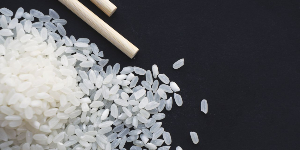

Home
Sushi Rice

Description
Simple sushi rice, perfect for rolling sushi.
Ingredients
- 2 1/4 Cups Short Grain White Rice
- 2 1/4 Cups Water
- 6 Tbsp Seasoned Rice Vinegar
- 3 Tbsp Sugar
- 4 Tsp Salt
Recipe
- Rinse rice with cool water and strain until water is mostly clear.
- Add rice and water to pot and cover, boil over high heat.
- After rice comes to a boil bring down to a simmer and cook for 15 minutes.
- Take off heat, let it sit covered for 10 minutes.
- Mix rice vinegar, sugar, and salt in a small bowl.
- Wet the inside of a large bowl, then add rice and vinegar mix. Carefully fold vinegar into rice.
- Cover with a damp towel and let cool to body temperature before using for sushi.